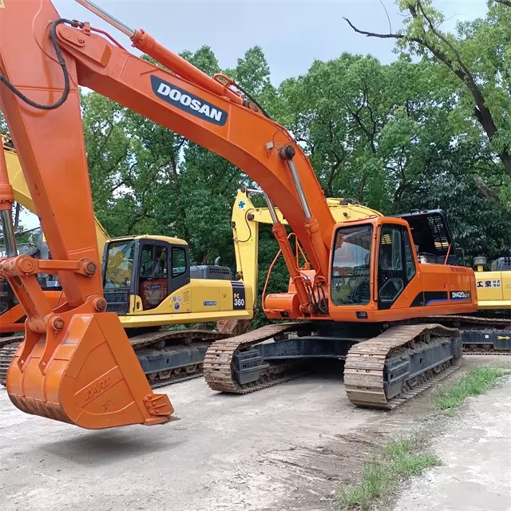

Refurbished Doosan DH420 Excavator
The Doosan DH420 Excavator is a powerful and versatile machine, designed to perform in a variety of demanding construction, mining, and earthmoving tasks. With its robust build, exceptional digging performance, and fuel-efficient engine, the DH420 is well-suited for both heavy-duty and precision tasks in challenging environments. Opting for a refurbished Doosan DH420 Excavator offers contractors the opportunity to acquire a high-quality, reliable machine at a reduced cost.
Honestly, it's almost impossible to buy a brand new excavator from China. They either don't exist or are made in China. If a Chinese seller tells you their Caterpillar/Komatsu/Volvo/Kobelco/Hitachi is brand new, they're lying. Therefore, a refurbished excavator is your best bet.

Here are the detailed specifications for a refurbished Doosan DH420 excavator:
Operating Weight and Dimensions
- Operating Weight: ~41,200 kg
- Overall Dimensions:
- Length: ~11.69 meters
- Width: ~3.35 meters
- Height: ~3.58 meters
- Tail Swing Radius: ~3.8 meters
- Ground Clearance: ~500 mm
- Track Width: 600 mm standard
Engine and Powertrain
- Engine Brand: Doosan
- Rated Power Output: ~250–265 kW (335–355 hp) @ 1,800 rpm
- Maximum Torque: ~1,600–1,800 Nm
- Fuel Tank Capacity: ~650–700 liters
- Travel Speed: 3.0–5.0 km/h
- Swing Speed: ~8.6 rpm
- Gradeability: Up to 35°
Hydraulic System
- Main Pump Type: Variable displacement axial piston pumps
- Flow Rate: ~2 × 360–380 L/min
- System Pressure: Up to 34.3 MPa
- Hydraulic Oil Capacity: ~500 liters
- Boom/Arm/Bucket Priority: Load-sensing with flow sharing
- Regeneration System: Enhances simultaneous operations and cycle speed
Performance Metrics
- Bucket Capacity: 1.44–2.18 m³ (SAE heaped)
- Max Digging Depth: ~7.7 meters
- Max Reach (Horizontal): ~11.5 meters
- Max Dump Height: ~7.8 meters
- Bucket Digging Force: ~240–260 kN
- Arm Digging Force: ~180–190 kN
Cab and Operator Features
- Cab Type: ROPS/FOPS certified
- Display: Analog gauges or basic LCD monitor
- Controls: Pilot-operated joysticks with auxiliary hydraulic circuit
- Comfort: Adjustable seat, optional HVAC
- Visibility: Wide glass area, LED work lights
Smart Features and Efficiency
- Fuel Efficiency:
- Mechanical fuel injection
- Auto idle and engine shutdown
- Emissions Control: Tier 2 compliant (no DPF/SCR)
- Transportability: Requires low-bed trailer for 42-ton class
Attachments Compatibility
- Standard Bucket: 1.44–2.18 m³
- Optional Tools: Hydraulic breaker, demolition shear, compactor, ripper
- Quick Coupler: Manual or hydraulic options available
Refurbishment Scope
Refurbished DH420 units typically include:
- Engine Overhaul: Turbocharger, injectors, seals, cooling system
- Hydraulic Restoration: Pump recalibration, valve block testing, hose replacement
- Electrical Diagnostics: Monitor, sensors, wiring harness
- Cab Reconditioning: Seat, joysticks, HVAC, repainting
- Structural Repairs: Boom/bucket welding, bushing replacement, undercarriage rebuild
Overview of the Doosan DH420 Excavator
The Doosan DH420 is an intelligent, well-built excavator designed for optimal performance across a variety of tough construction and mining environments. It's equipped with a powerful engine, strong hydraulics, and a well-engineered undercarriage that makes it ideal for large-scale excavation tasks, lifting heavy loads, and maneuvering in confined spaces.
Key Specifications of the Doosan DH420
-
Operating Weight: Around 42,000 kg (92,594 lbs)
-
Engine Power: 276 kW (370 hp)
-
Max Digging Depth: Up to 7.6 meters (24.9 feet)
-
Max Reach: Approximately 11.3 meters (37.1 feet)
-
Bucket Capacity: Ranges from 1.6 to 2.2 cubic meters (56.5–77.8 cubic feet)
-
Fuel Tank Capacity: About 600 liters (158.5 gallons)
-
Travel Speed: Up to 5.5 km/h (3.4 mph)
The DH420 is designed to tackle large-scale excavation and earthmoving jobs. Its robust structure, powerful hydraulics, and well-sized engine provide the strength and power needed to handle high-demand tasks.
Engine and Fuel Efficiency
The Doosan DH420 is powered by a high-performance diesel engine that provides outstanding fuel efficiency while maintaining the power necessary for demanding tasks.
-
Fuel Efficiency: One of the standout features of the DH420 is its fuel-efficient engine. The combination of advanced engine technology and hydraulic systems ensures optimal fuel consumption, reducing operational costs without sacrificing performance.
-
Powerful Engine: The DH420’s engine provides a robust 370 horsepower, delivering the power needed for large-scale earthmoving and lifting jobs, even in the toughest conditions.
-
Low Emissions: The engine complies with modern environmental regulations, producing fewer emissions than older models, making it a more eco-friendly option for contractors working in urban or environmentally-conscious areas.
Hydraulic System and Performance
The Doosan DH420 Excavator is designed with an advanced hydraulic system that ensures smooth operation and efficient power delivery to the boom, arm, and attachments.
-
Hydraulic Efficiency: The hydraulic system in the DH420 is highly efficient, providing powerful digging force and precise control. Whether it’s used for digging, lifting, or other tasks, the machine’s hydraulics ensure smooth and consistent performance, even under heavy loads.
-
Load-Sensing Hydraulics: The DH420 features load-sensing hydraulics that automatically adjust hydraulic flow based on the demands of the job. This system improves fuel efficiency by reducing unnecessary fuel consumption and optimizing hydraulic performance for specific tasks.
-
Attachment Compatibility: The DH420 can be equipped with various attachments, including buckets, hammers, grapples, and more, allowing it to tackle a wide range of tasks with precision.
Durability and Build Quality
Doosan machines are known for their strength and longevity, and the DH420 is no exception. Built to withstand the most demanding conditions, the DH420 boasts a heavy-duty frame and durable components, making it a machine you can rely on for years.
-
Undercarriage Design: The DH420 features a rugged undercarriage that ensures excellent stability and traction, even when working on uneven or challenging terrain. The tracks are designed to handle large payloads and provide superior durability over time.
-
Boom and Arm Construction: The machine’s boom and arm are constructed from high-strength steel, designed to withstand stress and heavy lifting without compromising the structural integrity of the machine.
-
Minimal Maintenance: The DH420 is engineered for durability and requires less frequent maintenance than other machines in its class. With proper care and regular maintenance, it can serve for many years, making it a reliable choice for contractors who need to minimize downtime.
Operator Comfort and Safety
The Doosan DH420 Excavator places a strong emphasis on operator comfort and safety. With an ergonomic cab design, excellent visibility, and various safety features, the DH420 is built to ensure operators can work efficiently while minimizing fatigue and risk.
-
Spacious Cab: The cab of the DH420 is designed for maximum comfort. It features adjustable seating, climate control, and a well-organized layout, allowing the operator to stay focused and comfortable throughout long shifts.
-
Safety Features: The DH420 comes equipped with various safety features, including ROPS (Roll-Over Protective Structure) and FOPS (Falling Object Protective Structure). These features help protect the operator in the event of an accident, ensuring a safer working environment.
-
Visibility: The cab is designed with large windows and minimal structural obstructions to provide optimal visibility of the worksite. This reduces blind spots and increases operator awareness, improving both safety and productivity.
Refurbished Doosan DH420 Excavator: Value and Cost Efficiency
A refurbished Doosan DH420 Excavator offers exceptional value for money. These machines undergo a rigorous refurbishment process, including thorough inspections and component replacements, to restore them to near-new condition. A refurbished unit typically comes with a warranty and offers the same reliability and performance as a new one but at a significantly lower price.
-
Cost Savings: Refurbished models provide significant savings compared to new units, making them an attractive option for contractors who need a powerful excavator but have a limited budget.
-
Quality Restoration: A refurbished DH420 undergoes a meticulous restoration process, including replacing worn-out parts, servicing the engine, and restoring the hydraulic system. As a result, it performs just like a new machine, but with a lower upfront cost.
-
Warranty and After-Sales Support: Many refurbished DH420 excavators come with a warranty, offering peace of mind. In addition, parts availability and after-sales support ensure that contractors have access to necessary assistance when required.
Maintenance Tips for the Doosan DH420
To maximize the lifespan and efficiency of the Doosan DH420, it’s important to follow proper maintenance practices. Here are some key maintenance tips:
-
Engine Maintenance: Regularly check and change the engine oil at the recommended intervals. Ensure that air filters are clean to prevent dirt from entering the engine, which could cause wear over time.
-
Hydraulic System Checks: Keep an eye on the hydraulic fluid levels and check for leaks. Replace the hydraulic filter as needed to ensure smooth and efficient operation of the hydraulic system.
-
Track and Undercarriage Maintenance: Regularly inspect the tracks and undercarriage for signs of wear or damage. Clean the undercarriage and check for any loose components to avoid premature wear.
-
Safety Inspections: Periodically inspect the safety features of the cab, including the ROPS and FOPS. Ensure that all lights, mirrors, and warning systems are functioning properly for maximum operator safety.
Conclusion
The Doosan DH420 Excavator is a highly durable, efficient, and powerful machine ideal for demanding construction, mining, and earthmoving applications. With its strong engine, high-performance hydraulic system, and robust build, the DH420 offers exceptional performance even in tough working conditions. A refurbished Doosan DH420 Excavator offers a cost-effective way for contractors to acquire a high-quality machine without the high price tag of a new model. By choosing a refurbished model, contractors can save money while still benefiting from the machine’s durability, power, and productivity.
With proper care and maintenance, the DH420 will continue to provide reliable performance for years, making it a valuable investment for businesses in need of powerful, cost-effective equipment.
Our Commitment
- 2 years / 4000 hours warranty.
- EPA certified.
- No sweatshop labor.
Contacts

- [email protected]
- Youtube Instagram Facebook
- Navigation: G206 (Sishu Bridge) in Changfeng County, Hefei City, Anhui Province, 200 meters north to the east